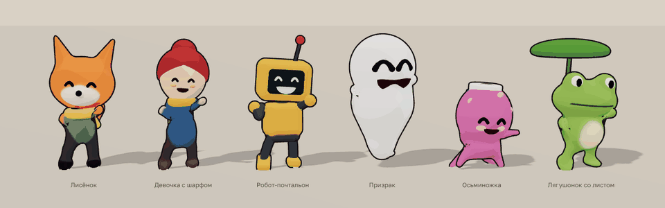
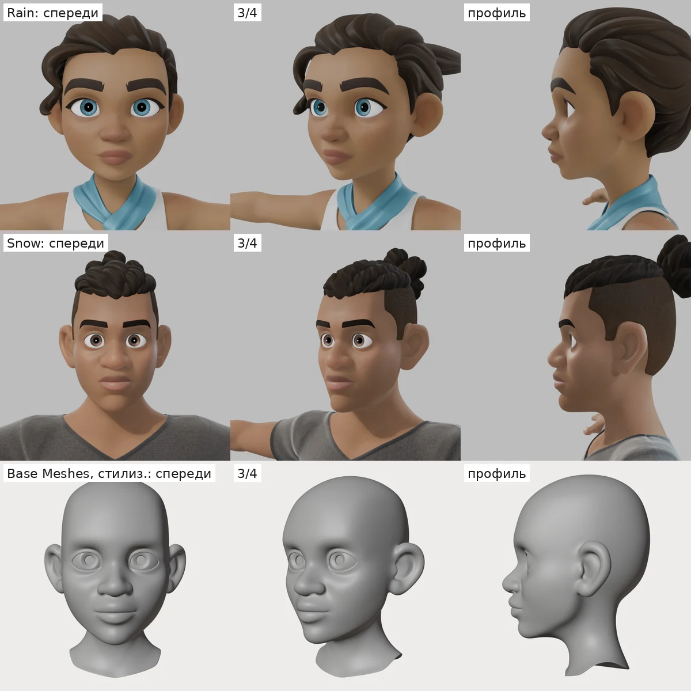
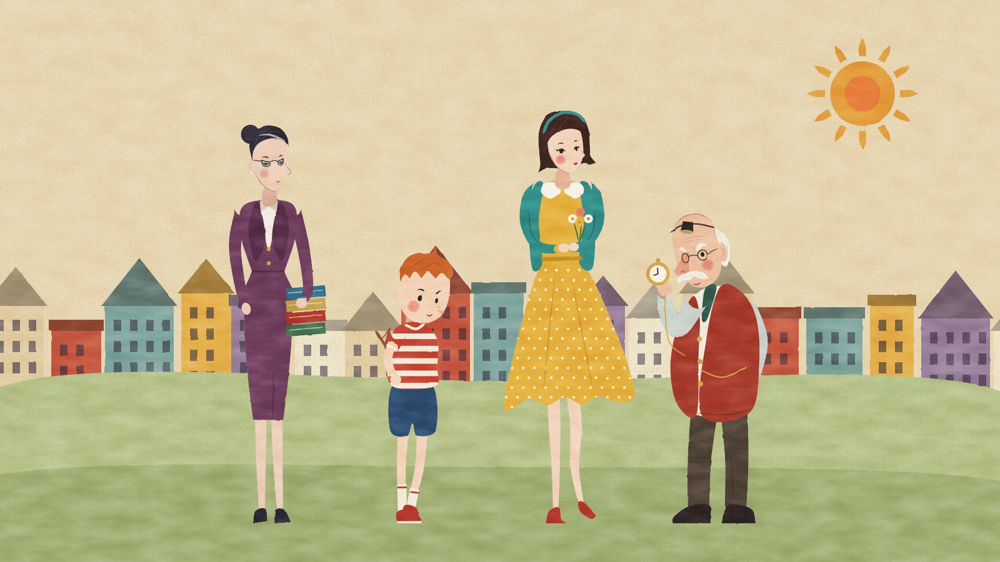
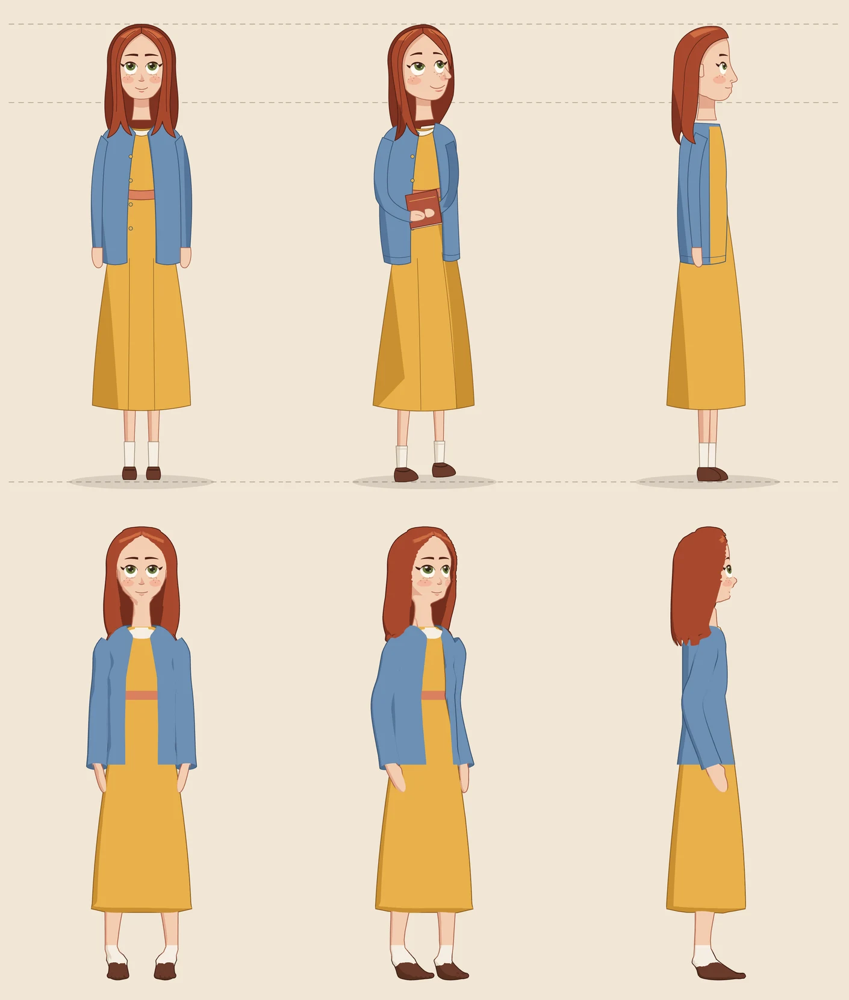

Art direction
Красивые персонажи для игр moood: всё, что сделано, по разделам.

Галерея путейВсе пути поиска: тела, головы, волосы, одежда, персонажи, движок.

Чужие инструментыГотовые открытые инструменты против того, что у нас: деформации, одежда, ткань, волосы, головы, свет, 3D из картинки.

Стили персонажейДвенадцать стилей из настоящих работ: образцы, правила и одни и те же четверо, нарисованные по ним.

Рисунок в 3DНаши рисунки как 3D-персонажи на скелете, с движениями Kimodo и живым лицом; вкладка «3D» — крутить и переключать.